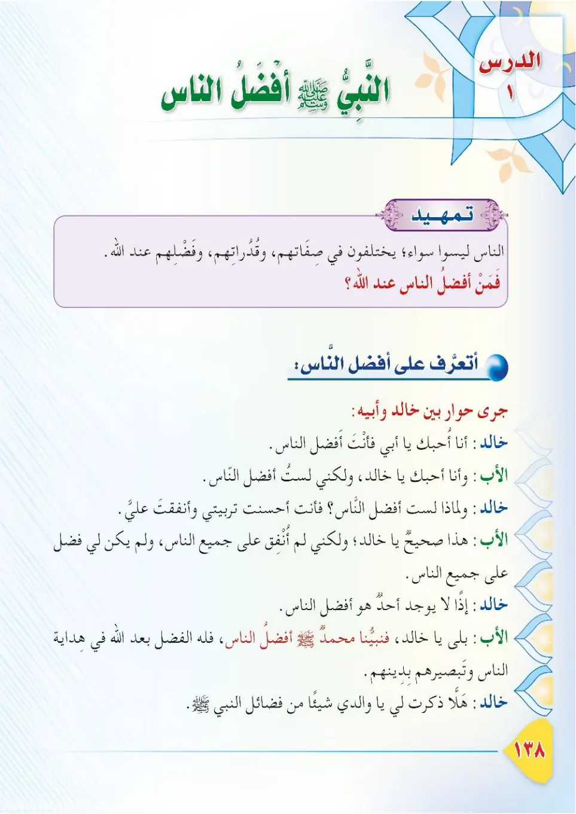
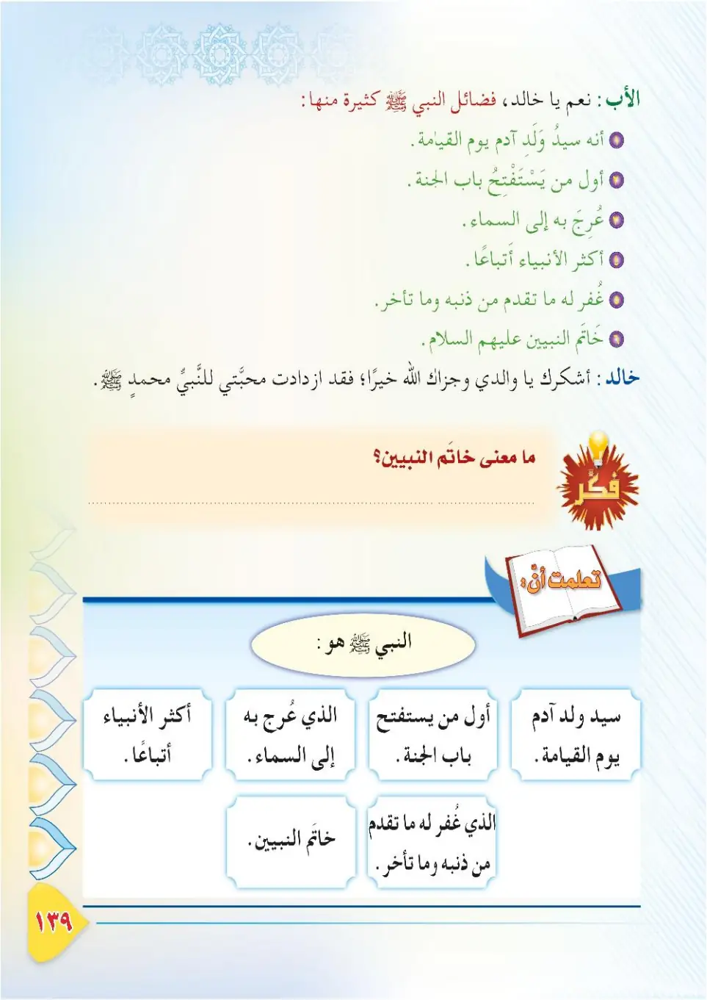
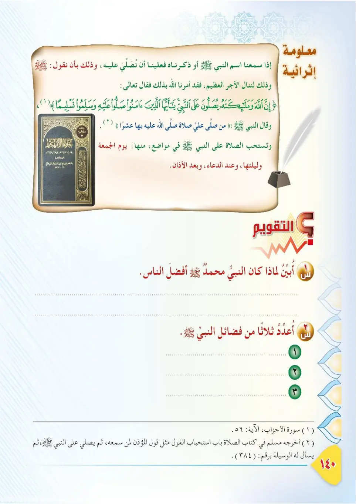

Stage 3·المرحلة الثالثة📖 Unit 3
أَفْضَلُ النَّاسِ The Best of People
From the Textbookpp. 139–141



النَّاسُ لَيْسُوا سَوَاءً؛ يَخْتَلِفُونَ فِي صِفَاتِهِمْ وَقُدُرَاتِهِمْ وَفَضْلِهِمْ عِنْدَ اللهِ. فَمَنْ أَفْضَلُ النَّاسِ عِنْدَ اللهِ؟ نَتَعَرَّفُ فِي هَذَا الدَّرْسِ عَلَى فَضْلِ نَبِيِّنَا مُحَمَّدٍ ﷺ.
An-nasu laysu sawa'; yakhtalifuna fi sifatihim wa qudratihim wa fadlihim 'inda Allah. Faman afdalu an-nasi 'inda Allah? Nata'arrafu fi hadha ad-darsi 'ala fadli nabiyyina Muhammadin ﷺ.
People are not equal; they differ in their qualities, abilities, and merit before Allah. So who is the best of people before Allah? In this lesson we will learn about the excellence of our Prophet Muhammad ﷺ.
மக்கள் சமமானவர்கள் அல்ல; பண்புகளிலும், திறன்களிலும், அல்லாஹ்விடம் அவர்களின் சிறப்பிலும் வேறுபடுகிறார்கள். அல்லாஹ்விடம் மக்களில் சிறந்தவர் யார்? இந்தப் பாடத்தில் நம் நபி முஹம்மது ﷺ அவர்களின் சிறப்பை அறிந்து கொள்வோம்.
حِوَارٌ بَيْنَ خَالِدٍ وَأَبِيهِ: قَالَ خَالِدٌ: أُحِبُّكَ يَا أَبِي؛ فَأَنْتَ أَفْضَلُ النَّاسِ. قَالَ الْأَبُ: وَأَنَا أُحِبُّكَ يَا خَالِدُ، وَلَسْتُ أَفْضَلَ النَّاسِ. قَالَ خَالِدٌ: لِمَاذَا؟ أَحْسَنْتَ تَرْبِيَتِي، وَأَنْفَقْتَ عَلَيَّ! قَالَ الْأَبُ: هَذَا صَحِيحٌ يَا خَالِدُ، وَلَكِنِّي لَمْ أُنْفِقْ عَلَى جَمِيعِ النَّاسِ، وَلَمْ يَكُنْ لِي فَضْلٌ عَلَى جَمِيعِ النَّاسِ. قَالَ خَالِدٌ: إِذًا لَا يُوجَدُ أَحَدٌ أَفْضَلُ النَّاسِ! قَالَ الْأَبُ: بَلَى يَا خَالِدُ؛ فَنَبِيُّنَا مُحَمَّدٌ ﷺ أَفْضَلُ النَّاسِ؛ فَلَهُ الْفَضْلُ بَعْدَ اللهِ فِي هِدَايَةِ النَّاسِ وَتَبْصِيرِهِمْ بِدِينِهِمْ. قَالَ خَالِدٌ: هَلَّا ذَكَرْتَ لِي شَيْئًا مِنْ فَضَائِلِ النَّبِيِّ ﷺ!
Hiwarun bayna Khalidin wa-abih: qala Khalid: uhibbuk ya abi; fa'anta afdalu an-nas. Qala al-abu: wa-ana uhibbuk ya Khalid, wa lastu afdala an-nas. Qala Khalid: limadha? Ahsanta tarbiyati, wa anfaqta 'alayya! Qala al-abu: hadha sahihen ya Khalid, walakinni lam unfiq 'ala jami'i an-nas, wa lam yakun li fadlun 'ala jami'i an-nas. Qala Khalid: idhan la yujadu ahadun afdalu an-nas! Qala al-abu: bala ya Khalid; fabiyyuna Muhammadun ﷺ afdalu an-nas; falahu al-fadlu ba'da Allah fi hidayati an-nasi wa tabsirihim bidinihim. Qala Khalid: halla dhakarta li shay'an min fada'ili an-nabiyyi ﷺ!
A conversation between Khalid and his father:
Khalid said: I love you, father; you are the best of people.
His father said: And I love you, Khalid, but I am not the best of people.
Khalid said: Why? You raised me well and spent on me!
His father said: That is true, O Khalid, but I did not spend on all people, nor did I do a favour to all people.
Khalid said: Then no one is the best of people!
His father said: Of course there is, O Khalid; our Prophet Muhammad ﷺ is the best of people, for he has the favour — after Allah — of guiding people and showing them their religion.
Khalid said: Why did you not mention to me some of the virtues of the Prophet ﷺ!
காலிதுக்கும் அவர் தந்தைக்கும் இடையே உரையாடல்:
காலித்: அப்பா, உன்னை நேசிக்கிறேன்; நீயே மக்களில் சிறந்தவன்.
தந்தை: நானும் உன்னை நேசிக்கிறேன் காலித்; ஆனால் நான் மக்களில் சிறந்தவன் அல்ல.
காலித்: ஏன்? என்னை நன்றாக வளர்த்து செலவு செய்தவன் நீ!
தந்தை: சரிதான் காலித்; ஆனால் அனைவருக்கும் நான் செலவிடவில்லை; அனைவர் மீதும் நான் உதவி புரியவில்லை.
காலித்: அப்படியானால் மக்களில் சிறந்தவர் யாருமே இல்லையா!
தந்தை: இருக்கிறார்கள் காலித்; நம் நபி முஹம்மது ﷺ தான் மக்களில் சிறந்தவர். அல்லாஹ்வுக்குப் பிறகு, மக்களை நேர்வழிக்கு இட்டுச் சென்று மார்க்கத்தைக் காட்டியதில் அவருக்கே சிறப்பு உண்டு.
காலித்: நபி ﷺ அவர்களின் சிறப்புகளில் சிலவற்றைச் சொல்லியிருக்கப்படாதா!
مِنْ فَضَائِلِ النَّبِيِّ ﷺ: ١- هُوَ سَيِّدُ وَلَدِ آدَمَ يَوْمَ الْقِيَامَةِ. ٢- هُوَ أَوَّلُ مَنْ يَسْتَفْتِحُ بَابَ الْجَنَّةِ. ٣- عُرِجَ بِهِ ﷺ إِلَى السَّمَاءِ السَّابِعَةِ. ٤- هُوَ أَكْثَرُ الْأَنْبِيَاءِ أَتْبَاعًا. ٥- غَفَرَ اللهُ لَهُ مَا تَقَدَّمَ مِنْ ذَنْبِهِ وَمَا تَأَخَّرَ. ٦- هُوَ خَاتَمُ النَّبِيِّينَ عَلَيْهِمُ السَّلَامُ.
Min fada'ili an-nabiyyi ﷺ: 1. huwa sayyidu waladi Adama yawma al-qiyamah. 2. huwa awwalu man yastaftihu baba al-jannah. 3. 'urija bihi ﷺ ila as-sama'i as-sabi'ah. 4. huwa aktharu al-anbiya'i atba'an. 5. ghafara Allahu lahu ma taqaddama min dhanbih wa ma ta'akhkhar. 6. huwa khatamu an-nabiyyina 'alayhimu as-salam.
Some of the virtues of the Prophet ﷺ:
1. He is the leader of the children of Adam on the Day of Resurrection.
2. He is the first to open the gate of Paradise.
3. He was taken on the Night Journey (al-Mi'raj) to the seventh heaven.
4. He has the most followers among the prophets.
5. Allah forgave him his past and future sins.
6. He is the seal (last) of the prophets, peace be upon them all.
நபி ﷺ அவர்களின் சிறப்புகளில் சில:
1. மறுமை நாளில் ஆதம் சந்ததியரின் தலைவர்.
2. சொர்க்கத்தின் வாயிலை முதலில் திறப்பவர்.
3. ஏழாவது வானத்திற்கு இஸ்ரா/மிஃராஜ் செய்யப்பட்டவர்.
4. நபிமார்களில் அதிக பின்பற்றுவோர் உள்ளவர்.
5. அல்லாஹ் அவரக்குத் தவறு செய்ததையும், செய்ய இருப்பதையும் மன்னித்தான்.
6. நபிமார்களின் இறுதியாளர்.
مَا مَعْنَى خَاتَمِ النَّبِيِّينَ؟ خَاتَمُ النَّبِيِّينَ: أَيْ آخِرُهُمْ، لَا نَبِيَّ بَعْدَهُ ﷺ.
Ma ma'na khatami an-nabiyyeen? Khatamu an-nabiyyeen: ayy akhiruhum, la nabiyya ba'dahu ﷺ.
What is the meaning of the Seal of the Prophets?
The Seal of the Prophets means: the last of them; there is no prophet after him ﷺ.
'நபிமார்களின் இறுதியாளர்' என்பதன் பொருள் என்ன?
அதாவது அவர்களே நபிமார்களில் கடைசியானவர்; அவருக்குப் பின் நபி இல்லை.
أَمَرَنَا اللهُ عَزَّ وَجَلَّ بِالصَّلَاةِ عَلَى نَبِيِّنَا مُحَمَّدٍ ﷺ وَالسَّلَامِ عَلَيْهِ، فَقَالَ تَعَالَى:
Amarana Allahu 'azza wa jalla bis-salati 'ala nabiyyina Muhammadin ﷺ was-salami 'alayh, faqala ta'ala:
Allah, the Exalted and Majestic, commanded us to send blessings and peace upon our Prophet Muhammad ﷺ. He the Exalted said:
நம் நபி முஹம்மது ﷺ அவர்கள் மீது ஸலவாத்தும் ஸலாமும் கூறுமாறு அல்லாஹ் கட்டளையிட்டான். அவன் கூறினான்:
﴿إِنَّ اللَّهَ وَمَلَائِكَتَهُ يُصَلُّونَ عَلَى النَّبِيِّ ۚ يَا أَيُّهَا الَّذِينَ آمَنُوا صَلُّوا عَلَيْهِ وَسَلِّمُوا تَسْلِيمًا﴾
Innallaha wa mala'ikatahu yusalluna 'ala an-nabiyyi. Ya ayyuhalladhina amanu sallu 'alayhi wa sallimu taslima.
Indeed, Allah and His angels send blessings upon the Prophet. O you who have believed, ask (Allah to confer) blessing upon him and ask (Allah to grant him) peace.
நிச்சயமாக அல்லாஹ்வும் அவனுடைய வானவர்களும் நபியின் மீது ஸலவாத்து கூறுகிறார்கள். ஈமான் கொண்டவர்களே! நீங்களும் அவர்மீது ஸலவாத்து கூறுங்கள்; ஸலாம் கூறுங்கள்.
وَقَالَ النَّبِيُّ ﷺ: «مَنْ صَلَّى عَلَيَّ صَلَاةً، صَلَّى اللهُ عَلَيْهِ بِهَا عَشْرًا». أَخْرَجَهُ مُسْلِمٌ.
Wa qala an-nabiyyu ﷺ: «Man salla 'alayya salatan, sallallahu 'alayhi biha 'ashra». Akhrajahu Muslim.
The Prophet ﷺ said: "Whoever sends blessings upon me once, Allah sends blessings upon him ten times because of it." Narrated by Muslim.
நபி ﷺ கூறினார்கள்: "என் மீது ஒருவர் ஒரு முறை ஸலவாத்து கூறினால், அதன் காரணமாக அல்லாஹ் அவர் மீது பத்து முறை ஸலவாத்து கூறுகிறான்." (முஸ்லிம்)
وَتُسْتَحَبُّ الصَّلَاةُ عَلَى النَّبِيِّ ﷺ فِي مَوَاضِعَ، مِنْهَا: ١- يَوْمَ الْجُمُعَةِ وَلَيْلَتَهَا. ٢- بَعْدَ الْأَذَانِ. ٣- عِنْدَ الدُّعَاءِ.
Wa tustahabbu as-salaatu 'ala an-nabiyyi ﷺ fi mawadi', minha: 1. yawma al-jumu'ati wa laylataha. 2. ba'da al-adhan. 3. 'inda ad-du'a'.
Sending blessings upon the Prophet ﷺ is recommended in many situations, including:
1. On Friday and its night.
2. After the adhan.
3. When making supplication.
நபி ﷺ மீது ஸலவாத்து கூறுவது பல சந்தர்ப்பங்களில் விரும்பத்தக்கது:
1. ஜும்ஆ நாளிலும் அதன் இரவிலும்.
2. அதான் பிறகு.
3. துஆ செய்யும் போது.